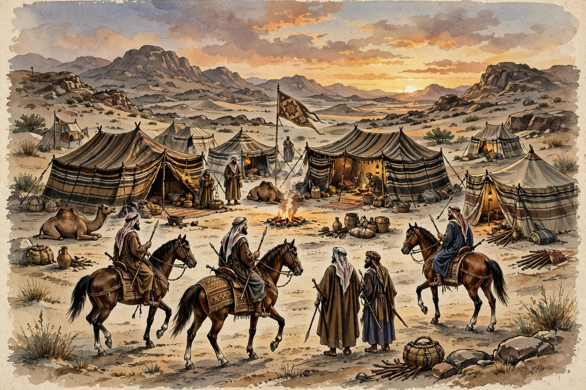

Asabiyyah
| Asabiyyah | |
 | |
| Arabic | عصبية (ʿaṣabiyya) |
|---|---|
| Literal meaning | "group feeling", "social solidarity" |
| Key thinker | Ibn Khaldun |
| Key work | Muqaddimah (1377) |
Asabiyyah or asabiya (Arabic: عصبية, ʿaṣabiyya) is a concept of social solidarity with an emphasis on unity, group consciousness, and a shared sense of purpose. The term is most famously associated with the North African historian and philosopher Ibn Khaldun (1332–1406), who made it the central mechanism of his theory of history in the Muqaddimah (1377).
Etymology
The word derives from the Arabic root ʿaṣaba, meaning "to bind" or "to wind", and originally referred to the agnatic kinship ties that bound members of a tribe together — the group of male relatives on the father's side who could be relied upon for protection and vengeance.
Ibn Khaldun's theory
In Ibn Khaldun's cyclical theory of history, asabiyyah is strongest among nomadic and rural groups, whose harsh living conditions foster tight-knit solidarity. A group with strong asabiyyah can conquer settled peoples and found a dynasty. Once in power, however, sedentary luxury, taxation, and urban comfort erode the group's cohesion over successive generations — typically within about 120 years, or four generations — until the dynasty decays and is replaced by a new group with fresh asabiyyah. Royal authority, in his formulation, is built upon and sustained by group feeling; religion can intensify asabiyyah by subordinating tribal rivalries to a shared cause.
Modern usage
The concept has been revived by modern sociologists and political scientists as an early theory of social cohesion and collective identity, and is sometimes compared to notions such as social capital. Ibn Khaldun is often credited as a forerunner of sociology for placing asabiyyah at the centre of an explanatory science of society.
See also
Ibn Khaldun · Muqaddimah · Historiography · Tribalism
Recreated from memory as a standalone page.